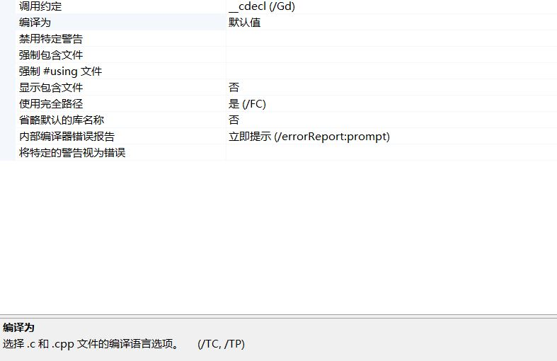

库的链接过程
更新日期:
文章目录
运行时库
运行时库（Runtime library）通俗的说就是我们的程序运行的时候所依赖的库文件，从形式上来讲和我们自己开发的静态库、动态库没什么两样，只是它们由微软开发和维护，并提供了一些常用的功能支持（如malloc,free, printf等等），如果我们的程序需要使用这些功能（事实上，只要是C/C++程序就一定会用到运行时库提供的功能），就要链接C/C++运行时库。上次弄了半天也没找到链接msvcrt的方法,今天在又一次学习静态库和静态库的时候发现了.
这是c语言链接的方式,VS已经在背地里偷偷帮你做了,你只需要#include<头文件>就可以调用函数了,通过命令行命令VS自动帮你#pragma comment()了.
| C语言标准库 | 特征 | 选项 | 预处理器指令 |
|---|---|---|---|
| libcmt.lib | 将本机 CRT 启动静态链接到你的代码。 | /MT | _MT |
| libcmtd.lib | 静态链接本机 CRT 启动的调试版本。 不可再发行。 | /MTd | _DEBUG, _MT |
| msvcrt.lib 和 msvcrxxx.dll | 与 DLL UCRT 和 vcruntime 一起使用的本机 CRT 启动的静态库。 | /MD | _MT, _DLL |
| msvcrtd.lib 和 msvcrxxxd.dll | 与 DLL UCRT 和 vcruntime 一起使用的本机 CRT 启动调试版本的静态库, 不可再发行。 | /MDd | _DEBUG, _MT, _DLL |
下面是C++运行时的标准库链接方法
| C++ 标准库 | 特征 | 选项 | 预处理器指令 |
|---|---|---|---|
| libcpmt.lib | 多线程, 静态链接 | /MT | _MT |
| msvcprt.lib 和 msvcpxxx.dll | 多线程动态链接（MSVCPversion.dll 的导入库） | /MD | _MT, _DLL |
| libcpmtd.lib | 多线程, 静态链接 | /MTd | _DEBUG, _MT |
| msvcprtd.lib 和 msvcpxxxd.dll | 多线程动态链接（MSVCPversionD.DLL 的导入库） | /MDd | _DEBUG, _MT, _DLL |
xxx代表版本,cp的意思就是c++,d就是debug版本的意思,最后没有d就是release版了.
同样也是VS偷偷帮我们做的.
具体链接什么库取决于源文件后缀是.c还是.cpp(即/TC,还是/TP选项).

更加详细的内容见微软文档,部分内容我现在还是理解不了的.比如文档特征部分.
点这里